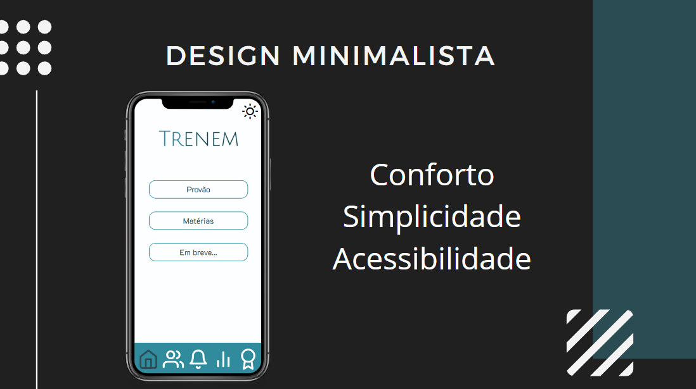
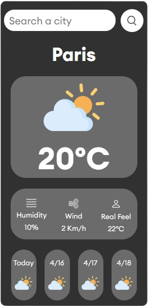
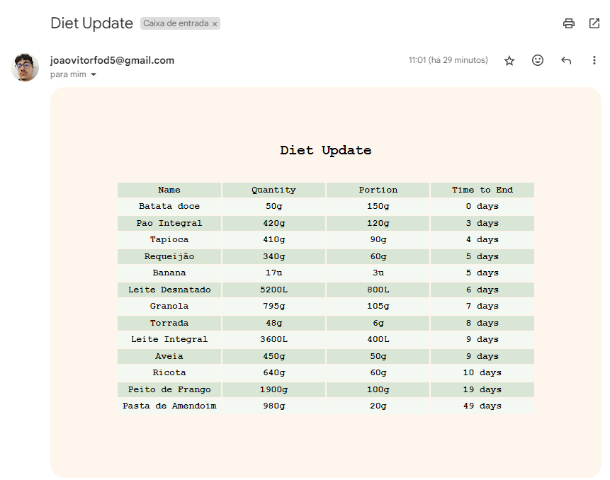

Meus Projetos
Trenem

Descrição
Um aplicativo que agrupa um grande banco de dados questões de vestibulares como o ENEM e possibilita que estudantes treinem para esses concursos de forma simples e descomplicada com quizes gamificados.
Tecnologias utilizadas
My-Weather-App

Descrição
Um projeto que mostra a previsão do tempo em diversas cidades do Mundo, utilizando de Famosa API da OpenWeather
Tecnologias utilizadas
Food-Stock

Descrição
Um projeto que envia um relatório de estoque de alimentos por e-mail a cada 24 horas de forma automatizada